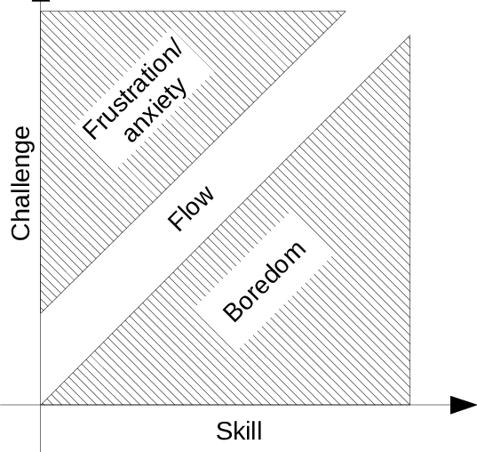
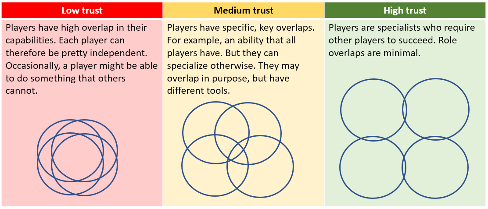

Related: games
Game Design and Teaching
Source: Game designers vs. education researchers on unguided instruction by Andy Matuschak
A mistake we made early on was looking primarily at metrics like retention and monetization. These simply don’t tell us much about what motivates players to play. If I were to build the game again, I would have implemented the togetherness metric for the very first private alpha.
A lot of pedagogy covers the same questions as game design (especially tutorials): how much explicit guidance should a student/player get in an activity?
The ”vow of silence”: to preserve the joy of discovery, games should carefully structure their activities so that players will learn what they need through play. An approach very similar to the constructionist ones found in Mindstorms
We can teach stuff using mechanics and level design instead of words.
The goal is to give users/players the freedom to manage their own position relative to their own intellectual “sweet spot”

Economics and Game Theory
Source: Prosocial economics for game design by Daniel Cook
Multiplayer games can help build a player’s social support network. What would game design look like if our goals included reducing loneliness, decreasing toxicity and boosting a player’s positive connections with others?
Loneliness
The loneliness epidemic is a real thing. It has been medically associated with mortality, depression, and more. In aggregate, chronic loneliness is estimated to shorten lifespan by an average of 15 years.
Advancing age also makes us more likely to be lonely. Especially as we work on longevity research, this is a pressing issue to try to solve.
The best games are designed to be played with friends.
Toxicity
At the root of much toxicity is the misdirection of our human need to belong
When humans feel like they lack membership in healthy, eudaimonic organizations, they experience stress and seek to rapidly remedy the situation (e.g. lashing out at others in hopes that putting others down helps them rise in status).
In toxic systems every new user is potentially rewarded if they adopt toxic behaviours.
Prosocial Game Design
Three main pitfalls
- Psychology: there are a lot of requirements to build friendships, like right sized groups of people, correct density, and engagement in mutually dependent reciprocal activities.
- Logistics: rigid human limits on how many relationships they can maintain and how long it takes them to form new ones (see: group limits)
- Economics: games are built on an economic foundation of resources (creation, transformation, trade, and consumption). However, it is hard to get economic incentives to align with those of social behaviour. “In particular, many of the key elements required by the psychological and logistical aspects of friendship formation are systematically undervalued within common economic practices.”
Elements of the internal economy
- Tokens: base units of quantity (can represent attention, time, or value). They act as goods, products, or currencies
- Sources: operations that produce new tokens
- Pools: stores of tokens
- Sinks: operations that take tokens out of circulation
- Transforms: transform one type of token into another
Then agents who perform operations:
- Players: human agents who trigger various transforms, sources, and sinks
- Black Box: computer agents or systems which also trigger transforms, sources, and sinks. Often, players attempt to understand the triggers of this black box.
From these, we can model various phenomena like feedback loops and ownership
We can then use these to influence incentive structures to balance games (e.g. improve a drop rate of a weapon to better increase the rate at which a key boss is defeated)
Examples of internal economic systems:
- Leveling Systems: XP tokens
- Items: enables players to perform various transforms on the pool (e.g. a weapon is a token which depletes enemy health tokens to generate XP tokens)
- Chat: budget of attentional and time resources
Prosocial Values
- Friendship: The formation and maintenance of healthy, meaningful friendship networks between players.
- Thriving individuals: Individuals feel competence, volition, and relatedness, both for themselves and for their friends.
- Altruism: The promotion of activities that involve intrinsically motivated altruism and cooperation.
- Positive group norms: The spread and enforcement of shared altruistic social norms within and across groups.
- Shared goals: The definition and adoption of shared group goals. Players work towards those goals via mutual interdependence, and achieve feelings of purpose and meaningfulness.
Anti-values
- Individual Toxicity: poorly socialized individuals resort to antisocial behaviours in an attempt to put themselves above the group.
- Group Toxicity: intergroup friction results in unhealthy interactions
- Loneliness: sparse relationship networks, we feel this when our social support network fails. Loneliness tells us that our current social situation is untenable long term and we should seek out connection with others.
Measuring Trust
Trust is an internal factor that cannot be measured directly so instead we need to rely on proxies.
- Pairwise bonds: There are two different (asymmetric) bonds for any given pair of player; the bond player A to player B and the bond from player B to player A.
- Active time spent together: One of the easiest symmetric bond proxies is simply tracking if players are in the same area together.
- Success together in high trust situations
- Time spent talking positively to each other
However, this ‘trust value’ should not be public for the sake of avoiding converting it into a metric to optimize for: Goodhart’s Law. Doing so may transform relationships into ones which are transactional in nature with clear extrinsic motivators in the form of your willingness to make that number go up or down. (This is also one of the reasons why ‘likes’ in social media end up being a source of toxicity and in general a very poor practice.)
One also needs to keep in mind that trust differs across social contexts
For new players, one of the scariest things is requirement to engage in specialized, high coordination group performances. Building towards high trust using a ladder:

Positive Sum Resources
An economy of zero sum resources is a world of scarcity. The challenge economics attempts to solve is how we might split up these limited resources in an efficient fashion.
In virtual worlds, we can make almost any resource positive sum. When a monster drops loot for one player, it can also drop loot for any other player that did damage.
However, truly abundant worlds are not super fun to play in (constraints are what make games interesting). How can we design for infinite source and imbalanced economies?
- Per players caps: cap number of harvestable positive sum resources per player
- Per group caps: cap total number of harvestable items per group of players
- Transaction costs: can prevent global pooling with large transaction taxes. This encourages local resource use
- Appropriate sinks: find ways to drain resources out of the world